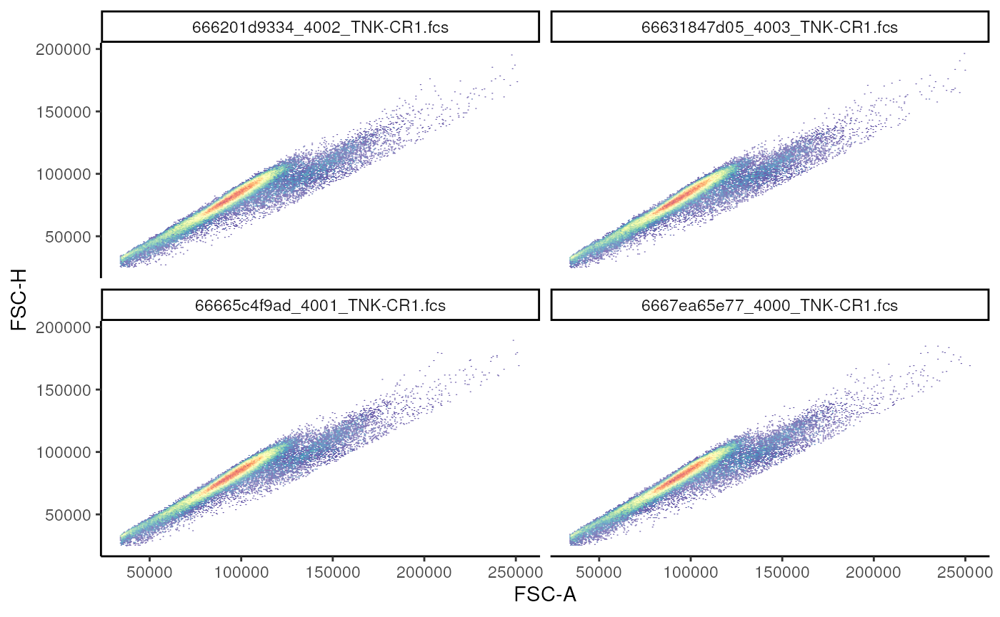
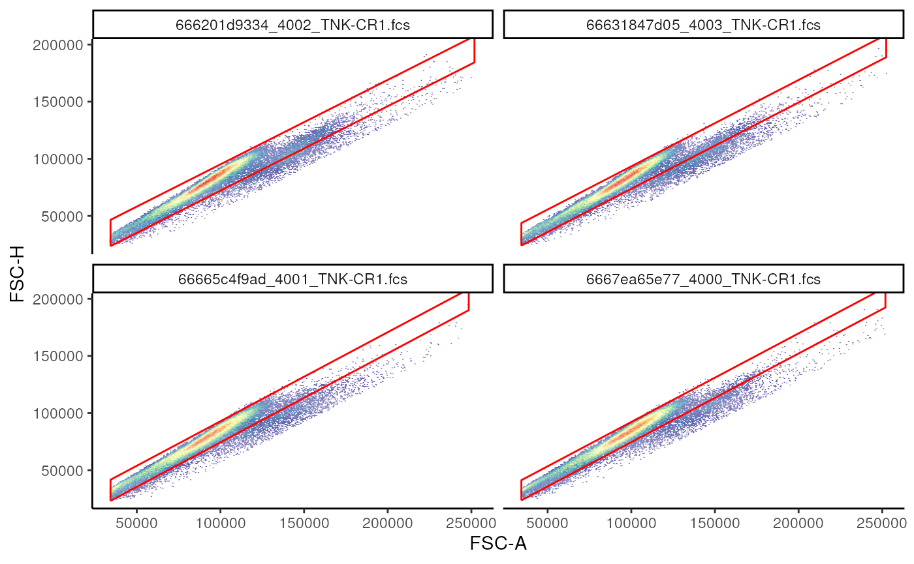
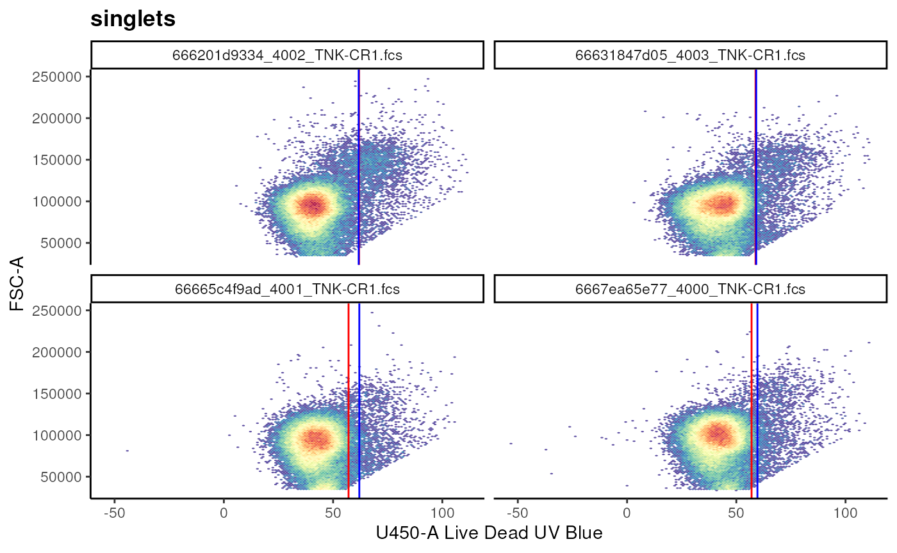
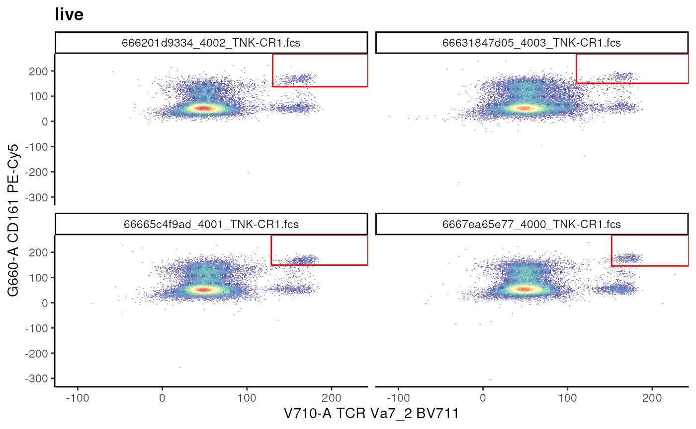
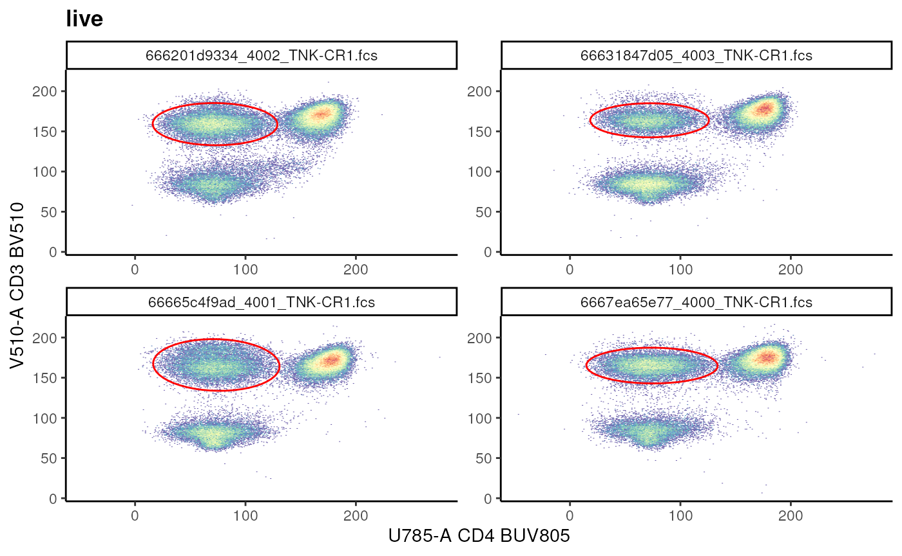
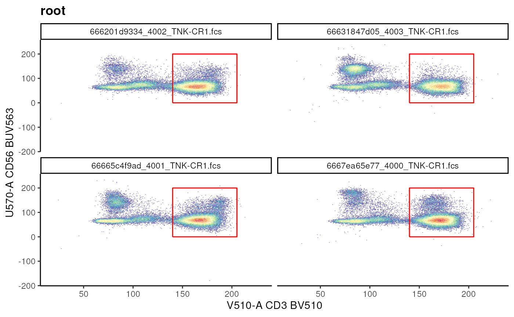
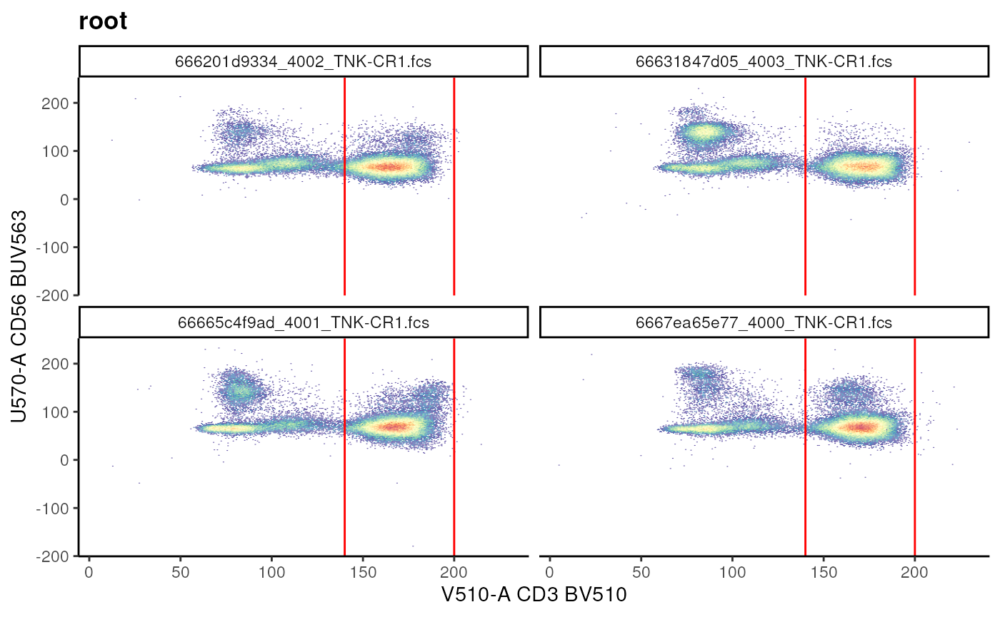
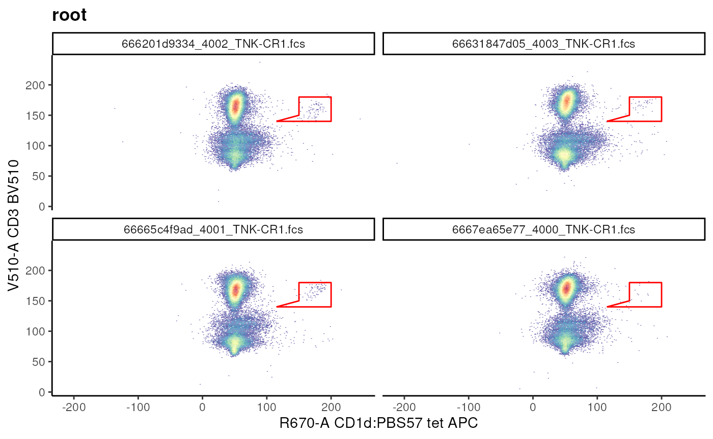
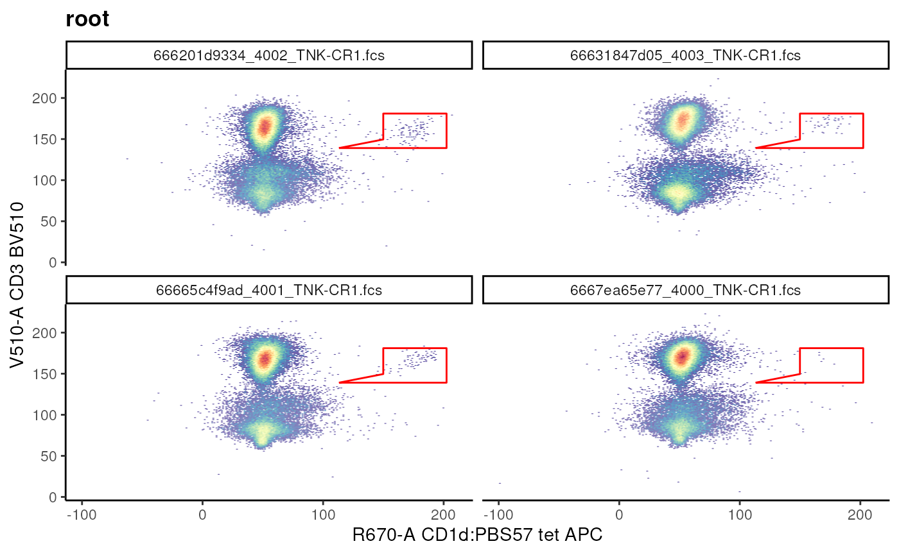
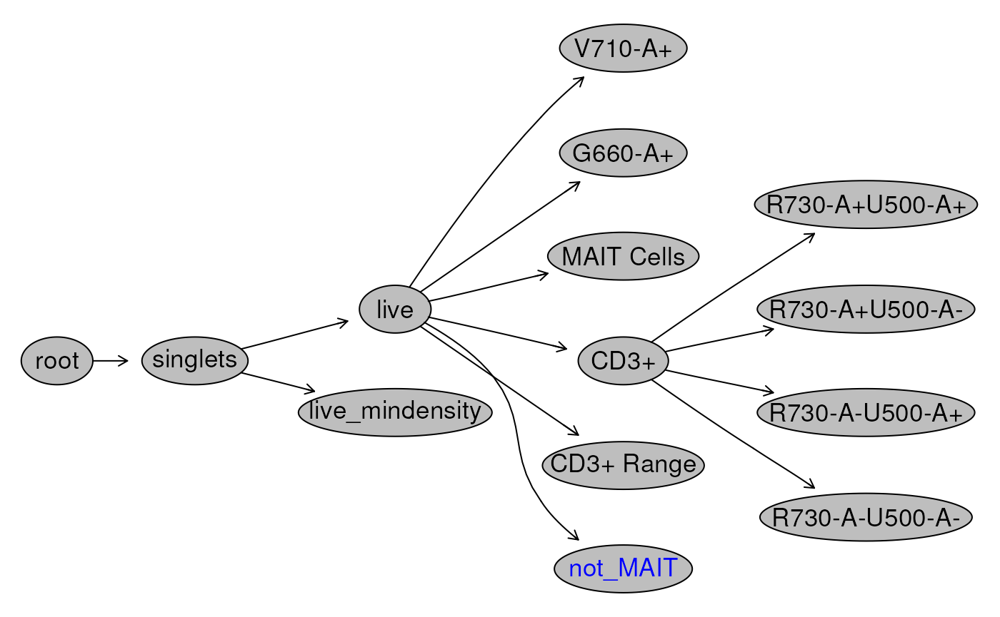

Background
The purpose of flow cytometry is to make inferences regarding some
cell type(s) of interest. Often this involves establishing/drawing a
gating hierachy to sequentially filter down to the cell type(s) of
interest. This process is very often done manually, and can be very
labour intensive. Importantly, manual approach implies large
variation when one person does it vs. the next, or even if the
same person does it multiple times. The cytoverse offers a
suite of tools to tackle this problem in a reproducible and programmatic
manner.
GatingSet and GatingHeirarchy
In the previous sections, we have seen (and worked with)
flowFrame, flowSet, cytoframe,
and cytoset. These objects hold the underlying data,
allowing us to visualize it, manipulate it, etc.
In this section we work with GatingSet and
GatingHierarchy. These objects, like the name suggests,
store information regarding various gates and filters that we will
generate. Importantly, we can save the GatingSet which will
completely package the analysis as well as the .fcs
files in an opensource format that can be shared, allowing
reproducibility.
In part 1 of this section, we will go over variety
of native methods that exist in the cytoverse which
analysts can utilize to gate their cells of interest.
In part 2 of this sections, we will go over methods to extract gated data for cells/populations of interest.
In part 3 (optional), we will demonstrate how
analysts can automate this process by utilizing a
gatingTemplate (a csv file that can be used to define and
build the hierarchy).
Building the gating tree: manual and semi-supervised
Required libraries
library(flowWorkspace)
library(ggcyto)
# set ggcyto theme
theme_set(theme_classic())
library(CytoverseBioc2023)## Warning: replacing previous import 'flowViz::contour' by 'graphics::contour'
## when loading 'flowStats'To create a GatingSet, first load in a
cytoset. Here, we are making use of the
cytoset that we have created previously.
# load cytoset
cs <- make_cytoset(only_TNK = TRUE)
# creating a GatingSet
gs <- flowWorkspace::GatingSet(cs)
gs## A GatingSet with 4 samplesWe have now created a GatingSet called
gs.
Exercise
- How would you check the metadata associated with the
GatingSet? - How would you subset
gsto only include samples where Treatment = Control?
Now, we revisit some of the concepts that we have seen previously:
compensation and transformation as it
pertains to a GatingSet.
We can directly compensate the GatingSet object.
# compensate a GatingSet
spill <- keyword(gs[[1]],"$SPILLOVER") # extract spillover matrix stored within the file
gs <- compensate(gs,spill) # GatingSet will be compensated and stores the spill matrix as well
recompute(gs) # update the gs
# retrieve compensation information
gs_spill <- gs_get_compensations(gs[[1]])
# output is a rich spillover information
slot(gs_spill[[1]],"spillover")[1:4, 1:4]## B515-A B610-A B660-A B710-A
## B515-A 1.000000000 0.07573059 0.04266579 0.003687143
## B610-A 0.009777704 1.00000000 0.78589800 0.074328487
## B660-A 0.005482375 0.03108691 1.00000000 0.112570733
## B710-A 0.024698965 0.12699130 0.90643808 1.000000000As well we can transform the GatingSet.
For convenience, we are using a previously defined transformerList object. The transformerList object was extracted from the workspace file created by the authors of this study and can be found here.
# transformation of GatingSet
t.rds <- dplyr::filter(get_workshop_data("/fj_wsp"), # a previously defined transformation
grepl(pattern = "transform",
x = rname))$rpath
my_trans <- readRDS(file = t.rds)
# make into transformerList object
my_trans_list <- flowWorkspace::transformerList(from = names(my_trans),
trans = my_trans)
gs <- flowWorkspace::transform(gs, my_trans_list) # transforms underlying dataA note about GatingHierarchy
You may have noticed above that some function calls have
gs_ and others have gh_.
gs_ indicates that GatingSet while
gh_ indicates a GatingHierarchy.
The GatingHierarchy is a data structure that stores the
sample-wise gating information present in a GatingSet. In
essence a GatingSet is a collection of
GatingHierarchy.
You can access the GatingHierarchy using the
[[ subset operation.
Adding gates and building a hierarchy
On this GatingSet, we will add various gates that
identifies cells of interest. Each sample within a
GatingSet is associated with a GatingHierarchy
that stores information regarding various gates that we would have
created and applied to the samples.
Below, we demonstrate various types of gates that could be estimated
automatically or be defined
programmatically which can be applied to the samples
within a GatingSet to build a hierarchy.
Note: This process is informed by
visualization of the data. As such, we will make ample
use of the ggcyto library.
Automatic estimation of gates
The gs_add_gating_method call from openCyto
library can be leveraged for automatic estimation of gates, as well as
clean scripting! Available gating methods can be listed by calling
gt_list_methods().
Singlets gate
A singlets gate is mostly used for data clean up, by
removing out doublets.
# visualization
singlet_vis <- autoplot(gs_pop_get_data(gs,"root"), # gs_pop_get_data(gs, node) extracts the underlying data
x = "FSC-A",
y = "FSC-H",
bins = 256
)+
facet_wrap(~sampleNames(gs)) # leverage the metadata that is saved within the GatingSet to facet plots
singlet_vis
Now, we estimate and add!
# estimate and add
gs_add_gating_method(gs = gs, # gatingset
alias = "singlets", # name given to the population
pop = "+", # indicate whether events inside or outside the gate should be filtered
parent = "root", # where to attach this node
dims = "FSC-A,FSC-H", # dimensions used to estimate the gate
gating_method = "singletGate", # one of the available gating methods
gating_args = "wider_gate = FALSE", # arguments passed to singletGate
)
# visualize
singlet_vis +
geom_gate(gs_pop_get_gate(gs,"singlets"))+
facet_wrap(~name)
Estimating cutpoint and ranges using gate_quantile and
gate_mindensity2
gate_quantile and gate_mindensity2 can be
used to estimate a cut point in the data, allowing the gating of data to
the left(-) or the right(+) of the cut
point.
# calculate a live gate
## Example of a quantile gate
## visualize
live_viz <- ggcyto(gs,
subset = "singlets",
aes(x = "Live", y = "FSC-A"))+
geom_hex(bins = 128)+
facet_wrap(~name)
# live_viz
# add gate using gate_quantile
gs_add_gating_method(gs,
alias = "live",
pop = "-",
parent = "singlets",
dims = "U450-A",
gating_method = "gate_quantile",
gating_args = "probs = 0.95")
# add gate using gate_mindensity2
gs_add_gating_method(gs,
alias = "live_mindensity",
pop = "-",
parent = "singlets",
dims = "U450-A",
gating_method = "gate_mindensity2",
gating_args = "max = 100, gate_range = c(50,75)")
# visualize the 2 extimated gates
live_viz+
geom_gate(gs_pop_get_gate(gs, "live"), colour = "red")+
geom_gate(gs_pop_get_gate(gs, "live_mindensity"), colour = "blue")
We can also use the cutpoints to estimate a rectangular gate!
# conventional T cells
t_cell_vis <- ggcyto(
gs, subset = "live",
aes(x = "TCR Va7_2", y = "CD161")
) + geom_hex(bins = 256)+
facet_wrap(~name)
# visualize
# t_cell_vis
# estimate and add
gs_add_gating_method(gs,
alias = "MAIT Cells",
pop = "++",
parent = "live",
dims = "G660-A,V710-A",
gating_method = "gate_quantile",
gating_args = "probs = 0.95, min = 50, max = 200")## ...## done
# visualize
t_cell_vis+
geom_gate(gs_pop_get_gate(gs,"MAIT Cells"))
Estimating an Ellipsoid gate
gate_flowclust_2d can be used to identify and generate
an Ellipsoid gate in a semi-supervised manner.
cd3_ellipse <- ggcyto(gs,
subset = "live",
aes(x = "CD4", y = "CD3"))+
geom_hex(bins = 256)
# estimate and add
gs_add_gating_method(gs,
alias = "CD3+",
pop = "+",
parent = "live",
dims = "U785-A,V510-A",
gating_method = "gate_flowclust_2d",
gating_args = "K = 3, target = c(100,150),quantile = 0.9, plot = FALSE")
# visualize
cd3_ellipse+
geom_gate(gs_pop_get_gate(gs,"CD3+"))
Exercise
- How would you add a gate called
CD4+ T Cellsdefined as: CD4+ and CD3+?
Hint: Use the visualization above to provide an appropriate target. -
gating_argsabove indicatesK = 3, quantile = 0.9, plot = FALSE. Try running the code block by indicatingplot = TRUE. What is the outcome? How can you run this code block again? Hint: try runninghelp.search(pattern = "remove gating").
Quad gate
When there are population(s) of interest in all 4 quadrants, it is
useful to estimate a Quad gate. For this, we can once again
utilize gate_quantile and gate_mindensity2.
Note: Pay attention to alias and pop
arguments!
# plot subsets
t_subsets <- ggcyto(gs,subset = "CD3+",
aes(x = "CD45RA", y = "CCR7"))+
geom_hex(bins = 256)+
facet_wrap(~name)
# visualize
# t_subsets
# estimate and add
gs_add_gating_method(gs,
alias = "*",
pop = "+/-+/-",
parent = "CD3+",
dims = "CD45RA,CCR7",
gating_method = "gate_quantile",
gating_args = "probs = 0.9")
# visualize (exercise)
# Fill with call to ggcyto
# 1. Gates/Nodes are a combination of CD45RA[+/-]CCR7[+-] Exercise
- How would you confirm that the attached gates have correct boundaries? Hint: Refer to the section on visualization.
- How would you remove the gates attached by
gs_add_gating_method? Hint: Try runninghelp(gs_add_gating_method)and read the details.gs_remove_gating_methodreverses the the results ofgs_add_gating_methodin a step wise manner.
Programmatic construction of gates
Suppose you would like to add a gate that has a particular shape or range that cannot be easily estimated using the automatic estimation approaches above. In this case, you could programmatically define a gate by either providing ranges, coordinates, or logical statements as demonstrated below.
Rectangular gate
As the name suggests, we can explicitly define a
rectangular gate by by defining a matrix where
the columns are the ranges for markers in x-axis and
y-axis. Only 1 dimension can also be provided. In this
scenario, the constructed gate filter the events marginated over the
dimension provided.
## Example of rectangleGate
cd3_vis <- ggcyto(
gs, subset = "root", aes(x = "CD3", y = "CD56")
)+
geom_hex(bins = 256)+
facet_wrap(~name)
# before
# cd3_vis
# using rectangle gate to add T cell gate
cd3_rectangle <- matrix(c(140, 205, 0, 200),
nrow = 2,ncol = 2,
byrow = F,
dimnames = list(NULL, # rownames
c("V510-A","U570-A"))) # colnames are channel names
cd3_rectangle_gate <- rectangleGate(.gate = cd3_rectangle,filterId = "CD3+ T cells")
cd3_vis+geom_gate(cd3_rectangle_gate)
When a single dimension is provided:
# provide the range
cd3_range <- matrix(data = c(140,200))
# set the column name to the requirec channel
colnames(cd3_range) <- "V510-A"
# construct gate
cd3_range_gate <- rectangleGate(.gate = cd3_range,
filterId = "CD3+ Range")
cd3_vis + geom_gate(cd3_range_gate)
To add this gate we call gs_pop_add like so:
gs_pop_add(gs = gs,
parent = "live",
gate = cd3_range_gate)## [1] 15Each call to gs_pop_add requires a
recompute(gs) call.
Exercise
- Try to run the following code.
no_recompute <- ggcyto(gs,
subset = "CD3+ Range",
aes(x = "CD3", y = "CD4"))+
geom_hex(bins = 256)
no_recomputerecompute(gs). Now
rerun the code.
Note:
gs_add_pop attaches the gates to the
GatingSet, the index of the filtered events are not
calculated until you call recompute.
Polygon gate
Similar to Rectangular gate we can define a
Polygon gate by generating a matrix of
vertices.
Here, each row of the matrix is the coordinate for a vertex and the columns are the channels.
## Example of polygonGate
nkt_vis <- ggcyto(gs, subset = "root",
aes(x = "CD1d", y = "CD3"))+ # fuzzy matching of marker names
geom_hex(bins = 256)+
facet_wrap(~name)## Warning in getChannelMarker(frm, dim): CD1d is partially matched with
## R670-ACD1d:PBS57 tet APC
# visualize
# nkt_vis
# define coordinates
## coordinates are based on visualization!
nkt_poly <- matrix(c(
115,140, # are arranged as x,y pair
150,150,
150,180,
200,180,
200,140), # coordinates
ncol = 2,
byrow = T, # indicates that add as x,y pair
dimnames = list(NULL, # rownames
c("R670-A","V510-A")) # colnames are channel names
)
# create a gate
nkt_poly_gate <- polygonGate(nkt_poly,
filterId = "NKT cells")
# visualize
nkt_vis + geom_gate(nkt_poly_gate)
Editing a gate after construction is straight forward.
# move up and scale
nkt_poly_gate_scale <- flowCore::transform_gate(nkt_poly_gate, # gate object
dx = 1, # which dimension to shift and by how much
# dy = 1,
# scale = 2 # scales both dimensions equally
scale = c(1.05,1.05) # individually scale each dimension
)
nkt_vis+geom_gate(nkt_poly_gate_scale)
Boolean Gates
We can use booleanFilter to simply
negate a gated population! The resulting filter does
not have a geometric representation.
# add not MAIT gate
## Example of booleanFilter
not_mait <- booleanFilter(`!MAIT Cells`, filterId = "not_MAIT")
# add Boolean gate
gs_pop_add(gs, not_mait, parent = "live")## [1] 16
recompute(gs)
# visualize
t_cell_vis+
geom_overlay(
gs_pop_get_data(gs, y = "not_MAIT"),
size = 0.3,
colour = "red"
)
Note: We are also able to combine multiple gates to generate
a booleanFilter.
Let’s create by combining not_MAIT and
MAIT Cells
# using an OR ('|') operator
all_cells <- booleanFilter(`not_MAIT | MAIT Cells`,
filterId = "All")
# add population
gs_pop_add(gs, all_cells, parent = "live")
recompute(gs)Visualizing the Gating Hierachy
We have been creating and adding many gates to our
GatingSet. A useful way to visualize all the gates and
their relationship is by plotting the gating Hierarchy as a tree. This
gives us an immediate summary of what nodes are present in our
GatingSet.
# plot the gating tree
plot(gs, bool = TRUE)
Another useful approach is to visualize the gated data, with gates that we have generated. See [articles/5_ggcyto.html] for more.
# visualize the full gating hierarchy
autoplot(gs[[1]],bins = 256, bool = TRUE)+
ggcyto_par_set(limits = "data") # set data range to be determined by data
Saving your work
Finally, we save your GatingSet. The
GatingSet can be loaded back into R using
load_gs("path/to/a/folder").
# save your work
save_gs(gs, path = "path/to/a/folder")Conclusion
In this section, we spent some time identifying various types of
gates that are available in cytoverse. As well, we
demonstrated how to programmatically create such gates, either manually
(i.e. by defining ranges or vertices) or in a semi-automated and data
driven manner.
In Part 2
we will take a look at how users can leverage a
gatingTemplate generate gates as we have done here, but
with minimal scripting. It is worth noting that while the use
gatingTemplate minimizes scripting, it does not compromise
on reproducibility!
Lastly, we also made ample use of the ggcyto library in
order to generate visualizations that helped in QC’ing the data and the
gates that we generated. We will go over ggcyto in more
detail in Visualizations.